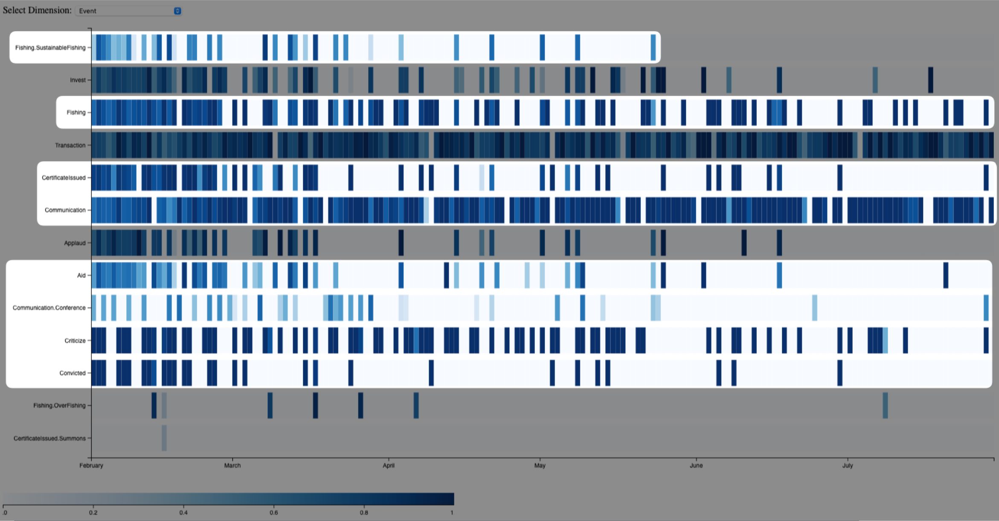
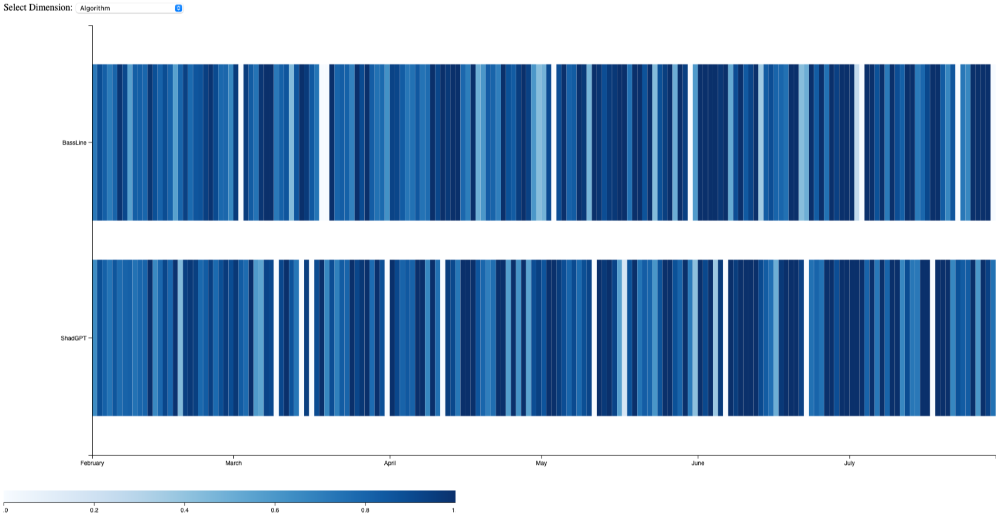
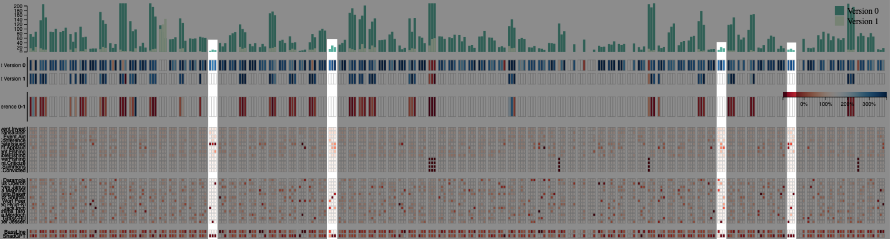
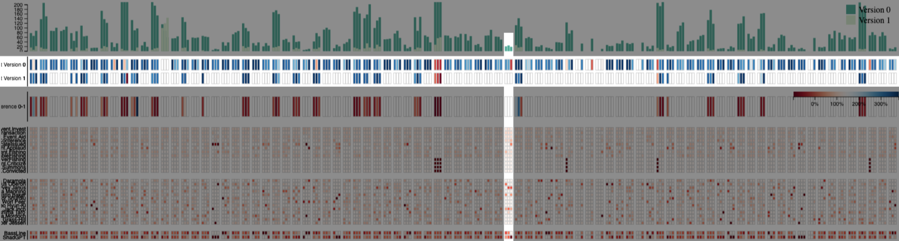
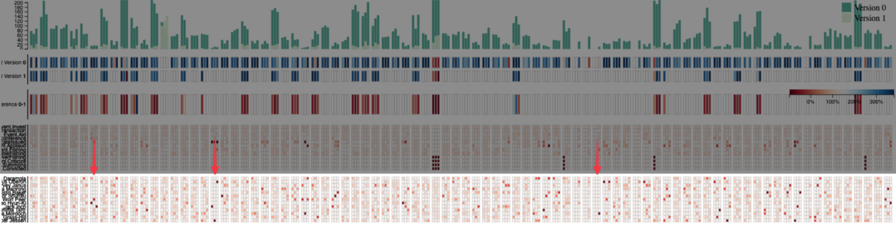
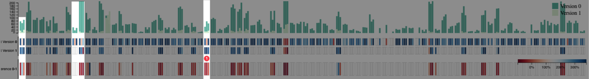
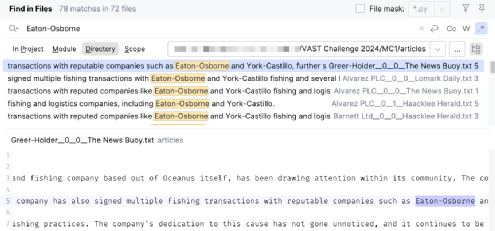
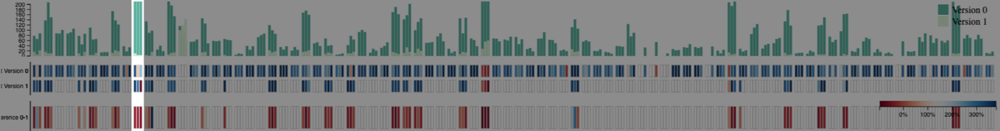

Raphael Buchmüller – raphael.buchmueller@uni-konstanz.de – University of
Konstanz PRIMARY
Daniel Fürst – daniel.fuerst@uni-konstanz.de – University of Konstanz
Alexander Frings – alexander.frings@uni-konstanz.de – University of Konstanz
Udo Schlegel – schlegel@dbvis.inf.uni-konstanz.de – University of Konstanz
Prof. Dr. Daniel Keim – keim@uni-konstanz.de – University of Konstanz
No
Excel
DataSpell
Python 3
Jupyter Notebook
Javascript
30
Yes
https://www.youtube.com/watch?v=0u-Xn2sVYBc
Use visual analytics to analyze the available data and develop responses to the questions to be provided. In addition, prepare a video that shows how you used visual analytics to solve this challenge.
1.
Use novel visualizations and visual analytic workflows to examine the bias in each news source. Create visualizations to help FishEye analysts understand how bias in the original sources changes over time. You may use the knowledge graph extracts and may use a large language model to supplement your understanding.
Our investigation into bias across news sources revealed a complex landscape of information distortion over time. We define bias as the discrepancy between facts present in the knowledge graph and those present in news articles. We employ LLM-based extraction for news articles to quantify this and compare the results with the knowledge graph. We compute our bias score as the fraction of facts appearing in both sources relative to the total unique facts.

Figure 1 - The first of our two dashboards with task related parts highlighted.
The analysis uncovers pervasive bias across all event types, with some categories more susceptible than others. Notably, facts extracted from reports on critiques and convictions showed heightened bias levels throughout the observed period, suggesting FishEye analysts or the algorithms used are particularly prone to subjective interpretation or selective extraction concerning these topics. Likewise, facts extracted about fishing and communication are affected by the same heightened bias levels. Although there is some more variation in these levels. Conversely, facts extracted for sustainable fishing, aid provided, and conferences are less affected by bias.

Figure 2 - The same dashboard configured to show the bias of the algorithms across time.
Besides, we observe that both LLM-based extraction algorithms, ShadGPT and BassLine, consistently introduce bias throughout the entire period under study. More concerning was the discovery that the bias in fact extraction intensified over time for both algorithms.
2.
FishEye uses two LLM extraction algorithms: ShadGPT and BassLine. Develop visualizations to compare the bias of each algorithm. Though not required, you may develop your own LLM-based extraction and include it in the comparison.
Our comparative analysis of the two LLM extraction algorithms, ShadGPT and BassLine, unveiled intriguing patterns in their application. Both algorithms are equally utilized in fact extraction, suggesting a general trust in their capabilities without selection bias across the analysts. However, our investigation revealed distinct specializations and potential biases in their usage.

Figure 3 - The second dashboard highlighting companies with limited amounts of articles provided. They are grouped in threes reflecting the distinct news sources.
A striking observation was the almost exclusive reliance on ShadGPT for articles about specific companies, namely Collins, Johnson and Lloyd, Greer-Hold, Smith-Hull, and Underwood Inc. In these cases, ShadGPT's primary focus centered on certificate issuance and applause suggesting a positive sentiment. This raises questions about the comprehensiveness of the extracted data for these subjects.

Figure 4 - The same dashboard providing insight into the text-size differences between the versions.
The analysis also uncovered an interesting discrepancy in sentiment extraction. When ShadGPT was used as the sole extraction tool for articles about Martinez-Le, it consistently produced a negative sentiment. This stood in stark contrast to the sentiments derived from other news sources, suggesting a potential bias in ShadGPT's interpretation of information related to this specific company.
3.
FishEye is also interested in understanding the reliability of their human analysts. Use visual analytics to examine potential analyst bias. Provide visual examples of the types of bias present.
Our visual analytics examination of potential analyst bias revealed a nuanced picture of human involvement in the fact extraction process. On a broad level, we found that human analysts generally demonstrated comprehensive coverage, analyzing a wide range of articles from various journals across the entire landscape of companies. This diversity in coverage suggests a commendable effort to maintain a holistic view of the information landscape.

Figure 5 - The second dashboard with arrows pointing towards articles about companies with only a single analyst extracting information.
However, upon closer inspection, we uncovered notable instances of analyst specialization, which could be
interpreted as a form of bias.
Certain analysts showed a marked preference for specific companies or topics.
For instance, the trio of Niklaus Oberon, Jack Inch, and Clepper Jessen emerged as the primary contributors of
information about Collins, Johnson and Lloyd,
far outpacing other analysts in their focus on this company (refer to the middle arrow).
Similarly, we observed that Worf Peer, Haenyeo Hyun-Ki, and Jack Inch were responsible for extracting the
majority of knowledge about Bishop-Hernandez (refer to the left arrow).
This concentration of expertise could lead to more in-depth insights but also raises concerns about the
diversity of perspectives on these particular companies.
We stumble upon similar constellations for other companies such as Frank Group, Greer-Holder, and Underwood Inc.
Companies that already caught our attention when analyzing bias toward positive sentiment and specific topics.
Perhaps the most striking example of specialization was Pelagea Alethea Mordoch,
who stood out as the sole analyst writing about Oka Seafood Shipping (refer to the right arrow).
While this exclusivity might indicate deep expertise,
it also presents a risk of a single-perspective bias in the information about this company.
4.
Identify unreliable actors: news sources, algorithms, or analysts. Use visualizations to provide evidence for your conclusions. Can you use the data provided and a visual analytics workflow to determine who else may be involved?
Our investigation into unreliable actors and hidden connections within the news ecosystem revealed several concerning discrepancies and potential biases. We uncovered potential family connections that could introduce bias, with multiple individuals sharing the surnames "Conti" and "Park" in the nodes of the knowledge graph. These relationships might signify hidden influences or conflicts of interest that warrant further scrutiny.

Figure 6 - The second dashboard with companies highlighted where the sources differ in their sentiment.
Analysis of news sources revealed notable biases, particularly with Lomark Daily often presenting more negative sentiments compared to other outlets. In one instance involving Frey Inc., Lomark Daily appeared to censor crucial details, drastically altering the sentiment from negative to positive (refer to 1 marked in Figure 6). This manipulation of information is deeply concerning and undermines the credibility of the source.

Figure 7 - A search conducted in a text editor highlighting a name that's only found in the articles but which analysts omitted from the knowledge graph.
A glaring inconsistency also emerged with the company Eaton-Osborne, mentioned 78 times in news articles yet conspicuously absent from the human-extracted knowledge graph. If that company is not part of Osborne and Sons, its omission raises significant questions about the completeness and reliability of the knowledge graph.

Figure 8 - The second dashboard showing more shifts in sentiment from the news sources.
Generally, we observed consistency in sentiments across different versions of articles, with some exceptions.
News Bouy, for instance, showed a dramatic shift in sentiment regarding Brown, Clarke and Martinez, while
Haacklee Harald and Lomark Daily demonstrated less extreme sentiments for certain companies.
Perhaps most alarming was the discovery of questionable additions to the knowledge graph.
New edges, typically representing transactions and communications, sometimes included incidents of overfishing,
convictions, and certificate summons that were absent from actual reports.
This discrepancy raises serious concerns about the integrity of the data and the potential for fabricated or
misrepresented information.
·
Which version of the data did you choose to work
with and why? Did you download more than one version and change course during
the challenge?
·
Given the task to develop visualizations for
knowledge graphs, did you find that the challenge pushed you to develop new
techniques for visual representation?
·
Did you participate in last year’s challenge? If
so, did your experience last year help prepare you for this year’s challenge?
·
What was the most difficult part of working on
this year’s data and what could have made it more accessible?
All VAST data is fully synthetic. Any resemblance to real
people, places, or events is purely coincidental. Some elements of the 2024
VAST Challenge resemble data released for the 2023 VAST Challenge. Participants
should not assume that there is any continuity and should not use any earlier
or any external data for their submission. Mini-Challenge 1 participants should
only use data supplied for this mini-challenge in their submission. Data from
other challenges should not be combined, except in the Grand Challenge.